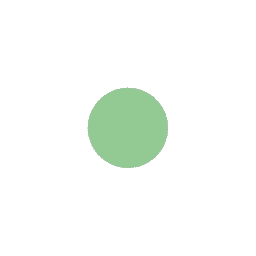
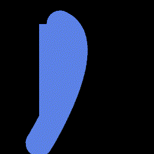
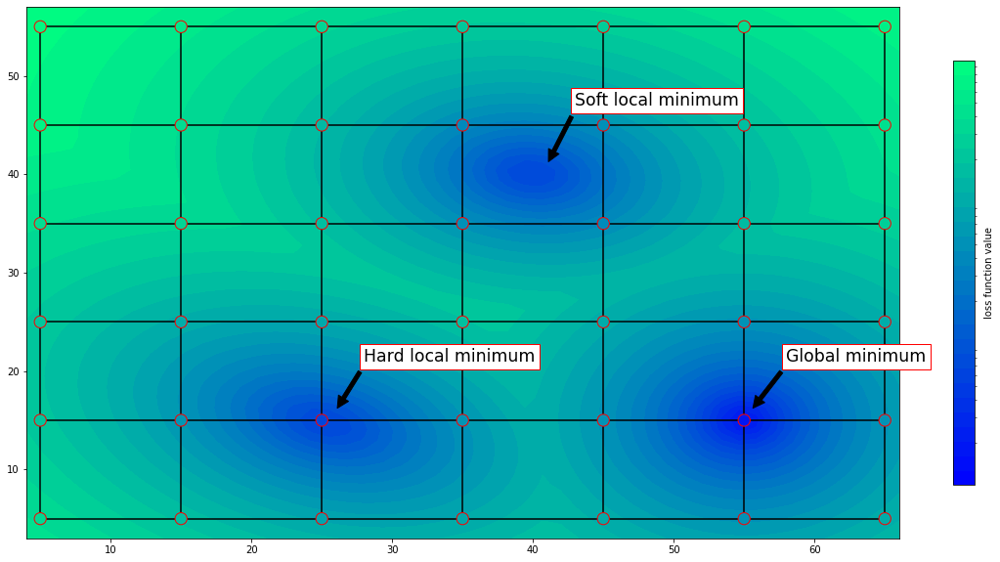
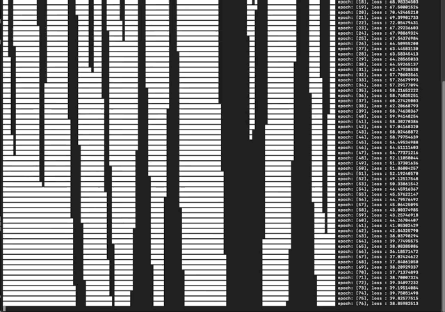
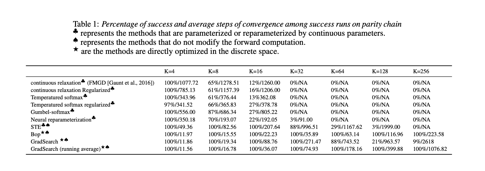

<!DOCTYPE html>
<script>window.texme = { style: 'plain' }</script>
<script src="https://cdn.jsdelivr.net/npm/texme"></script>
<style>
    body {
        background: lightcyan;
        margin-left: -5%;
        margin-right: 40%;
    }

    main {
        max-width: 20em;
        padding: 1em;
        
        /* border: medium double gray; */
        /* margin: 2em auto; */
        /* background: lightyellow; */
    }
</style>
<textarea>


# Mitigating The Failures Of Gradient-Based Program Induction

> This is working in progress: A preliminary manuscript can be found <a href="./draft.pdf">here</a>.


## Motivation and a simple example

Here I study the problem of gradient-based program induction, i.e., optimizing the parameters of a program given input-output pairs, using gradient-based optimization algorithm. 

The starting point is extend the scope of the tasks traditional program synthesis can handle. By a wider range of application, I mean programs with not only discrete parameters, but with continuous parameters; or even there can be a neural network compoenent inside a program. By using gradient-based optimization, the simplest and most intuitive solution is just to optimize them jointly, while EM or wake-sleep style algorithms also remain possible.

For example, consider the following "sketch" of a program:

```
def a_drawing_program():
    int K;
    if K == 0:
        draw_a_circle(x_0,y_0,radius,color_0)
    else if K == 1:
        draw_a_rect(x_1,y_1,width,height,color_1)
    else if K == 2:
        draw_a_close_curve(points,color)
    return the_output_drawing
```
The parametes that need to be inferred are a int *K*,  float *x*, *y*, *width*, *color*, etc.

And suppose we have a target image which we want to synthesize a drawing program to output.
By traditional satistfiability-based synthesis methods, this is not easy to start with: there are many continuous parameters, the target image is essentially a pixel array.

The image in the left is the target image, and the gif in the right is the result during the optimization by using the proposed algorithm. In this case, we use a [differentiable rasterizer](https://people.csail.mit.edu/tzumao/diffvg/) approach to make the overall program differentiable, 
and use
* a continous optimizer for the continuous parameters (*radius*, *color*, etc)
* a **discrete** optimizer for the discrete parameter (*K*)

We just use the simplest iterative gradient-based update. This is the simplest way I can think of.
<br>

<p align="center" width="100%">
        
        
        <!-- <source src="./assets/output.mp4" type="video/mp4"> -->
</p>
<p align="center" width="100%">
    <b>Left</b>: target image. <b>Right</b>: the optimization process
</p>

This can be seen as a simple conditional program with three possible branches, or more like a multi-arm bandits. Anyway, we actually formulated in a very deep learning way: a forward computation, compute gradient by AutoDiff, and then update the parameters by some learning rule.
It is just that what we got as the result, the optimized model, is actually a program, though the synthesis is done by gradient-based optimization.

## Problems
However, one would notice that in this two-optimizer framework, the major problem is to have a optimizer that can optimize discrete parameters given gradient as learning signal.

And one can reasonably argue, if we want to efficiently synthesize these new novel programs with mixed discrete-continuous parameters, we need to first show that we can use gradient-based optimization to efficiently optimize discrete parameters first!

Turns out that there is already some previous work, showing that gradient-based optimization is not very effective, and in fact, there exist some cases when gradient-based optimization will fail constantly! (the Parity Chain problem)

In particular, the problem comes from the failures of gradient program induction of the TerpreT.
> **TERPRET**: A Probabilistic Programming Language for Program Induction, *Gaunt et al, 2016*

Recent works on this direction choose a straightforward ‘relaxation’ approach: the discrete space of programs is relaxed into a continuous space so that search over programs can be performed using gradient-based optimization in the continuous space. However, this approach is outperformed by the conventional discrete search algorithms, by a large margin.

We investigate the diagnosize the problem of the straightforward way of gradient descent of relaxed programs and come to the observations that the relaxation creates the new **soft** local minima that causes all the problem.

<p align="center" width="100%">
    
    <p>A relaxation approach can be stuck in soft local minima. And more interestingly, the straightforward solution of adding regularization terms to encourage the parameter to be more "discrete" does not work for the parity chain, the simple reason being the soft local minima happen to have equall distance away from the nearest discrete points!</p>
</p>


In this paper, we argue that the continuous relaxation is not the only way to perform gradient-based optimization, and instead we can perform gradient-based optimization directly in the discrete space.
With the lessons we learned from existing approaches, and guided by the ideal properties we wish to see, we proposed a new algorithm GradSearch.

<p align="center" width="100%">
        
        <!-- <source src="./assets/output.mp4" type="video/mp4"> -->
        <p>The optimization process of the proposed algorithm, there seem to be a kind of propagation effect.</p>
</p>

We show that we can effectively solve the synthesis of parity chain, while relaxation based methods all fail by stucking at the soft local minima.
I also tested with a wider range of other methods but they do not work. The only notable exception here is the Bop ([Helwegen et al 2019](https://arxiv.org/abs/1906.02107)) algorithm. But it works more like an abnormaly here as it is highly sensitive to hyperparameters. Meanwhile, Bop can only handle binary parameters, our proposed algorithm can also be generalized to categorical variables and others. And we also show that Straight-through estimator (STE, [Bengio et al 2013](https://arxiv.org/abs/1308.3432)) and Bop are special cases of our GradSearch algorithm.


<p align="center" width="100%">
    
    <!-- <source src="./assets/output.mp4" type="video/mp4"> -->
</p>

However, when we tried to extend this method to more challenging program synthesis tasks, the resuls are not so good. It turns out that there remain two problem:

First, as GradSearch is essentially a local search, it is then vulnerable to the problem of local minima. One easy way out is of course to employ certain tricks to escape from local search. But this in turn becomes a highly tedious job.

Second, the gradient w.r.t the parameters is not always there, becauses of many structures like conditional ("IF-ELSE") and loops, there is a lot of place where there is no informative gradient to use as learning signal.

Several possible way out:
1. Finding clever use of the continous relaxation and GradSearch. One hypothesis is that we can use the continuous relaxation as a warm-starting, and then let GradSearch to search efficiently (till a local minima). This way we alternative from two ways of optimization. But this is also not working.
2. Investigate different ways of converting to differentiable program. However this is like a no-end trial-and-error process. A first starting point perhaps is to investigate the triangular norms for logic operators first.
3. The major problem is that we are moving from parity chain to circuits, a multi-layered structure. There is possibel ways to better understand the credit assignment. For example, we can start with a simplest scenario of a If-Else conditional program first, and then move to multi-layered structured programs. For this, perhaps we can take a look at multi-armed bandits.
2. Abandon the idea of gradient-based optimization for discrete parameters. What we want is essentially a algorithm that optimize continuous parameters (like neural networks) and discrete parameters together. There can be other possiblities other than gradient descent.
